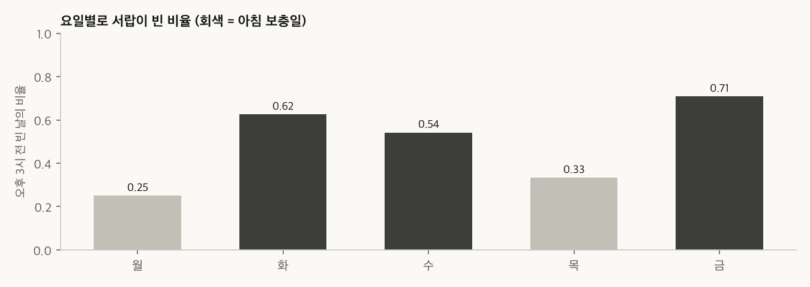
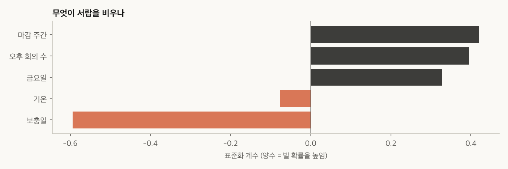
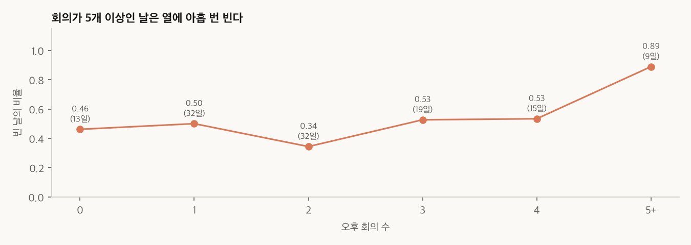
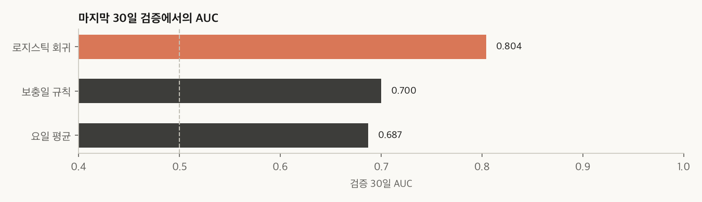

매일 오후 3시 전에 사무실 간식 서랍이 비는지를 확률로 예측했습니다. 앞 90일로 배우고 마지막 30일로 채점했습니다.
AUC는 "빈 날"과 "남은 날"을 하나씩 뽑았을 때 빈 날에 더 높은 확률을 준 비율로, 0.5가 무작위, 1.0이 완벽입니다.
| 방법 | 내용 | AUC |
|---|---|---|
| 요일 평균 | 학습 기간의 요일별 빈 비율을 그대로 확률로 사용 | 0.687 |
| 보충일 규칙 | 보충일(월·목)이면 남고, 아니면 빈다고 예측 | 0.700 |
| 로지스틱 회귀 | 보충일 · 회의 수 · 마감 주간 · 기온 · 금요일 5개 변수 | 0.804 |
이 보고서는 report 스킬의 예시입니다. 데이터는 시드를 고정해 만든 가상 데이터이며 실제 사무실 기록이 아닙니다.
| 변수 | 정의 | 값 |
|---|---|---|
| empty_by_3pm (타깃) | 오후 3시 전에 서랍이 비면 1 | 전체 비율 0.49 |
| restock | 그날 아침에 서랍을 채웠는가 | 월 · 목에 1 |
| meetings | 오후 회의 수 | 0~7개, 평균 약 2개 |
| deadline_week | 4주에 한 번 오는 마감 주간 | 120일 중 30일 |
| temp_c | 그날 기온 | 6.8~30.6°C |
| weekday | 요일 (월~금) | 모델에는 금요일 여부만 사용 |

예시는 누구나 그대로 다시 만들 수 있어야 합니다. analysis.py는 고정 시드로 같은 데이터를 만들고, 같은 숫자와 그림을 다시 냅니다. 데이터를 만드는 규칙도 코드에 그대로 있으므로, 모델이 그 규칙을 얼마나 되찾는지도 볼 수 있습니다.
계수의 부호가 직관과 맞습니다. 보충일은 빌 확률을 내리고, 회의 · 마감 주간 · 금요일은 올립니다.


| 변수 | 계수 | 해석 |
|---|---|---|
| 보충일 | −0.594 | 가장 큰 영향. 채운 날은 오후까지 남는다 |
| 마감 주간 | 0.421 | 야근과 간식 소비가 함께 늘어난다 |
| 오후 회의 수 | 0.395 | 회의 간식으로 한꺼번에 빠진다 |
| 금요일 | 0.328 | 주 마지막 날, 보충 뒤 가장 오래 지난 날 |
| 기온 | −0.076 | 거의 영향 없음 |
시간 순서를 지켜 앞 90일로 학습하고 마지막 30일로만 채점했습니다. 표준화 기준도 학습 90일로만 계산했습니다.

| 실제로 빔 | 실제로 남음 | |
|---|---|---|
| 빈다고 예측 | 10 | 5 |
| 남는다고 예측 | 5 | 10 |
30일 중 20일을 맞혀 정확도는 0.667입니다.
섞어서 나누면 같은 주의 비슷한 날이 학습과 검증에 함께 들어가 점수가 부풀려집니다. 그래서 앞 90일 학습, 뒤 30일 검증으로 시간 순서를 지켰습니다.
| 한계 | 내용 |
|---|---|
| 작은 검증 표본 | 검증은 30일뿐이라 AUC가 몇 날의 결과로 크게 흔들립니다. 0.804는 대략적인 수준으로만 읽습니다. |
| 가상 데이터 | 변수 효과는 데이터를 만든 규칙에서 나왔습니다. 실제 사무실에는 그대로 적용되지 않습니다. |
| 빠진 변수 | 방문객, 휴가자 수, 간식 종류처럼 실제로 중요할 수 있는 변수는 없습니다. |
cd report/examples/snack-drawer
python3 analysis.py # data.csv, results.json, figures/*.png 생성 (numpy, matplotlib)
python3 ../../scripts/report_tool.py check report.html --breaks
python3 ../../scripts/report_tool.py render report.html
| report 스킬 요소 | 이 예시에서 |
|---|---|
| 결론형 제목 | 쪽마다 제목만 읽어도 결론이 이어진다 |
| 숫자 카드 · 강조 행 | 2쪽의 세 숫자와 최종 모델 행 |
| 그림 스타일 | analysis.py에 복사한 종이색 · 먹색 · 클레이 팔레트 |
| 자동 검사 | 넘침 0건, 짧은 꼬리 줄 0건으로 통과한 상태로 둔다 |